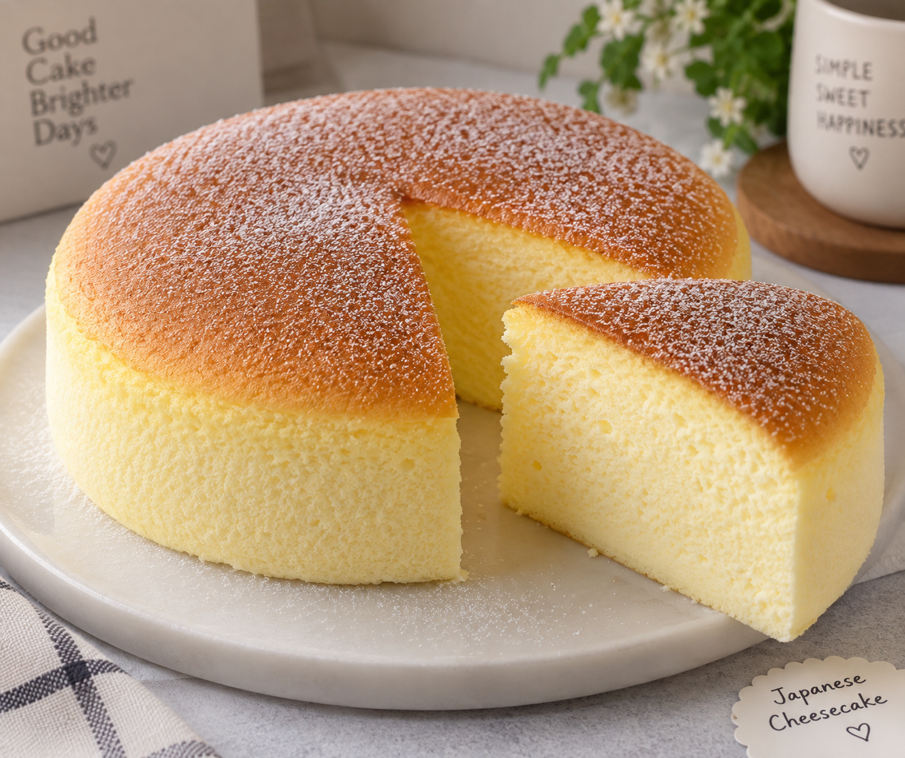

Back to Home
Japanese Cheesecake

Description
A light and fluffy cheesecake known for its soft, airy texture.
It has a mild creamy flavor and is less heavy and sweet than
traditional cheesecake.
Ingredients
For the Cheesecake:
- 250g cream cheese
- 50g unsalted butter
- 100ml milk
- 6 large eggs, separated
- 60g all-purpose flour
- 20g cornstarch
- 120g white sugar
- 1 teaspoon vanilla extract
- 1 teaspoon lemon juice
For the Topping:
- Powdered sugar (optional)
Steps
- Preheat the oven to 320°F (160°C).
- Melt the cream cheese, butter, and milk together over low heat. Stir until smooth, then let it cool slightly.
- Separate the egg whites from the egg yolks.
- Add the egg yolks and vanilla to the cream cheese mixture and mix well.
- Sift in the flour and cornstarch. Mix until smooth.
- In another bowl, beat the egg whites and lemon juice until foamy.
- Slowly add the sugar while beating until the egg whites form soft to medium peaks.
- Gently fold the beaten egg whites into the cream cheese mixture in several portions.
- Pour the batter into a lined cake pan.
- Put the cake pan inside a larger baking tray and add hot water to the larger tray.
- Bake at 320°F (160°C) for about 20 minutes.
- Lower the temperature to 285°F (140°C) and bake for another 40-50 minutes.
- Turn off the oven and leave the cheesecake inside with the door slightly open for about 15 minutes.
- Remove the cheesecake and let it cool.
- Dust with powdered sugar before serving if desired.